Lecture 06: Bioethics in medical research
Personalized medicine group
- member since Jul 2023
- Personalisierte Medizin und organoide pharmazeutische Testmodelle:
Fortschrittliche Materialien, Analytik und Computertechnik.
- The group mainly operates in heidelberg and mannheim universities.
Transfer-oriented scientists.
personalized medicine perspective.
AI, 3D modeling, spheroids and organoids.
0. From prehistoric times: Why medicine ?

Immortality has been the ultimate goal!
Reason
immortality has been one of the main reasons.

Members

Recent findings
viral Megastructure finding could also be pseudoscience, no real data.

Chinese perspective of house-doctor
prevention is better than cure.

Avicenna إبن سینا

Evidence-Based Medicine: Advocated systematic observation, experimentation, and logical reasoning.
Contagious Diseases: Suggested that some diseases spread via tiny organisms (predating germ theory).
Quarantine Principle: Proposed isolating sick patients to prevent disease spread.
Psychological Influence on Health: Recognized the connection between mental and physical health (early psychosomatic medicine).
Described the circulatory system (though not full circulation like Harvey).
Detailed the structure of the eye, brain, heart, and liver.
Distinguished between pleurisy and pneumonia.
Classified 760+ drugs with dosages and effects.
Introduced experimental testing of remedies before use.
Advanced herbal medicine, distillation, and chemical-based treatments
Emphasized diet, exercise, and hygiene for disease prevention.
Linked environmental factors (air, water quality) to health.
Organized medicine into five books:
General principles of medicine
Materia medica (drugs & remedies)
Diseases affecting specific organs
Systemic diseases (e.g., fevers, infections)
Compound drugs & pharmacology
Medical ethics topics
- Human beings have faced a lot of challenges, tackling them required ways to interact with the challenges.
Medical ethics has been related to three main topics:
Religion باوەڕی ئاینی
Philosophy فەلسەفە
Moral reasoning هۆکارهێنانەوەی ئاکاریTopic-1: Religion
Example: in Christianity that blood transfusion is forbidden.
Circumcision: in Judaism is a must, they found out about Haemophilia.

Topic-2: Philosophy
example: Homunculus in sperm as drawn by Nicolaas-Hartsoeker in1695
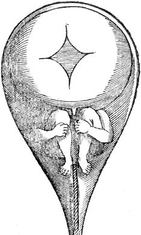
Topic-3: Moral reasoning
Moral reasoning is the process of evaluating ethical dilemmas systematically.
Beauchamp & Childress’ Four Principles framework:
Autonomy
Respect patients’/participants’ choices.
Beneficence
Act in their best interest.
Non-maleficence
Avoid harm.
Justice
Ensure fairness in resource allocation.
Ventilator Shortage During COVID-19
Scenario:
10 patients need ventilators, but only 6 are available.
How should hospitals prioritize who gets treatment?
Moral Reasoning Approach:
Autonomy: Can patients/families consent to triage protocols?
Beneficence: Prioritize those most likely to survive with treatment.
Non-maleficence: Avoid denying care based on age/disability alone.
Justice: Use a lottery system to ensure fairness.
Many hospitals adopted triage scores (medical urgency + survivability).
Eisenhower Matrix Important Not-important Urgent I-U U Not-urgent I I
Which branches of Medicine do we consider medical sciences ?
General medicine.
Pharmacology
Veternary medicine
Dentistry
Community medicine
Science vs Pseudoscience in Medicine
- Purple toothpaste removes yellow stain.
- Backed by physics, but still fake.
Pseudoscience in biotechnology
- Theory of scalar waves by german pseudoscientist Konstantin Meyl.

1. Ethical challenges in clinical trials.
[Case Study 1] The dead salmon of the Uni Houston
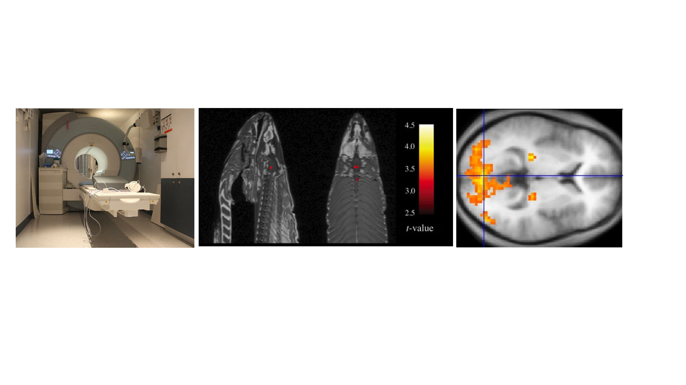
Experiment Details
- They then asked the salmon what emotion the human must have felt.
- The results showed neural activities when the salmon was confronted with human images.
- The device needed calibration
- Learnt outcome:
- Negative control is required to report specificity.
- Statistical power and design is necassary.
- The research won ignoble prize.
Ignoble prize winner

Jolie Effect

Her mother died of breast cancer, though!

Rates spiked for 1 year
Neuralink

pause and Ponder!
- How do you assess the benefits and risks of this technology ?
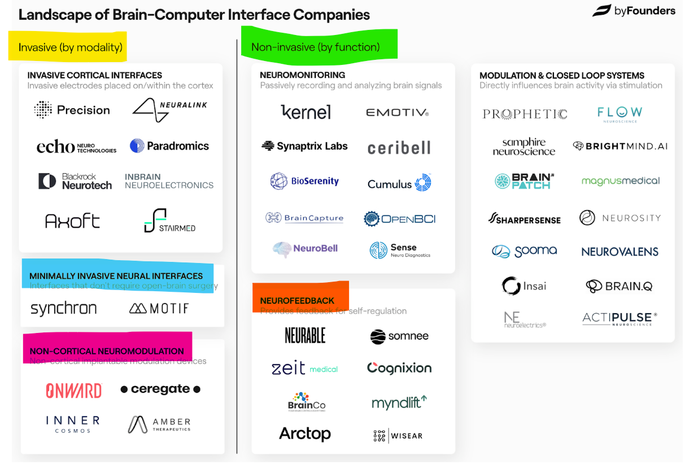
pause and Ponder!
The Tuskegee Syphilis Study (1932-1972)
The Tuskegee Syphilis Study (1932-1972) - caused distrust in the US government.
US public health service studied untreated syphilis in 600 black men without informed consent.
Participants were denied treatment even after penicillin became the cure in the 1940s.
Violation of informed consent, and beneficence.
Systemic racism and exploitation of vulnerable population.
- Lead to the modern ethical guidelines (Belmont Report) emphasizing autonomy and justice.
- Injecting Ethiubian Jews to make them infertile
!
pause and Ponder!
Thousands of Ethiopian women are said to be receiving shots of Depo-Provera every three months in Israeli clinics. The contraceptive stops menstruation and has been linked to fertility problems and osteoporosis.
Racial discrimination + Genocide.
Yet to be learnt.
2. Genomic and Biotechnological research.
Genotype | sum of all genetic material in a given organism.
Phenotype | expression of the genotype.
Multimodal integration has gained attention in many genomics, transcriptomics, and other spatial omics studies.
data is high dimensional. Requires AI development for diagnosis and biomarker discovery.

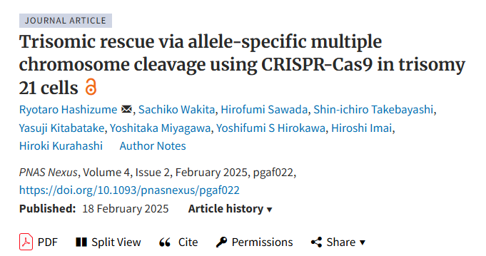
DOI: 10.1093/pnasnexus/pgaf022
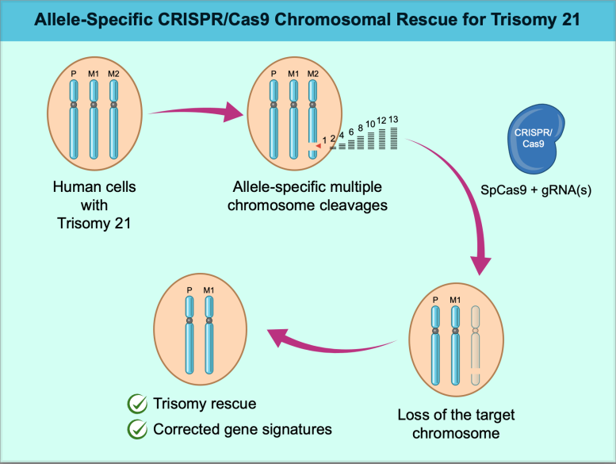
pause and Ponder!
Shown potential to do trisomy rescue.
Not yet performed on living organisms. [published Feb. 2025]
3. Pandemics, Public Health, and Policy Experiments.
- Was Covid a Plandemic ? What are the evidences for-and-against this theme ?

pause and Ponder!
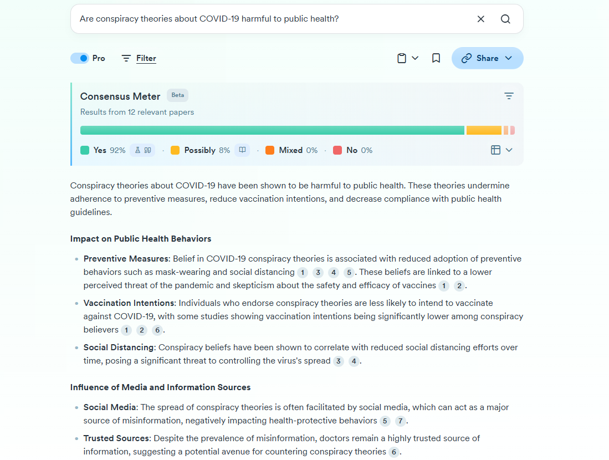))){width=“175%”}
pause and Ponder!
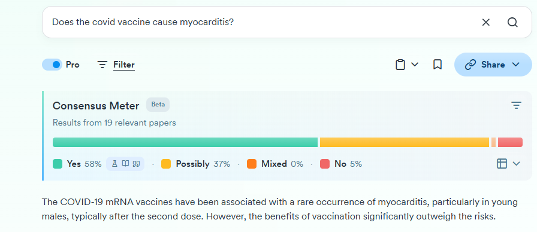
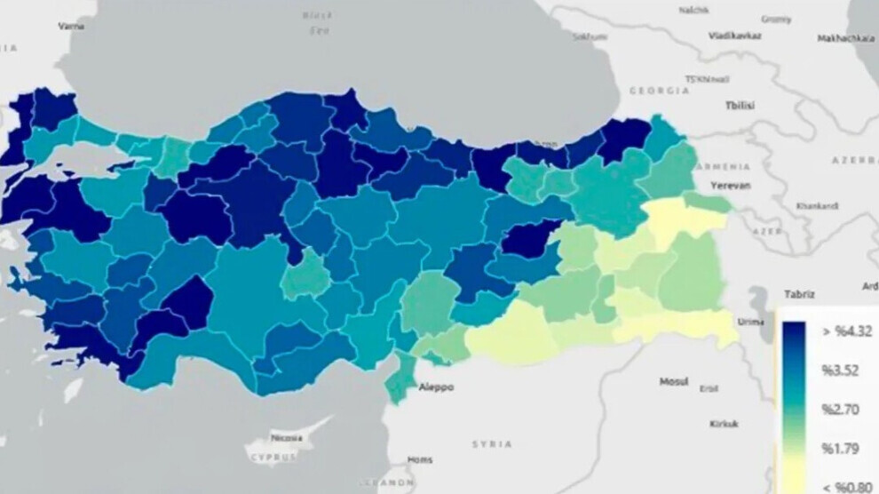
pause and Ponder!
turned out to be good though :D
| City | Vaccination% |
|---|---|
| Hakkari | 1.27 |
| Agri | 1.34 |
| Shrnak | 1.46 |
| Siirt | 1.67 |
| Urfa | 1.76 |
pause and Ponder!
- Restricted availability of Covid-19 vaccine in Kurdish areas.
COVAX framework to promote equitable vaccine access.
31.12.2023 COVAX got closed, though.
4. Community & Patient Partnerships in Research.
The Navajo Nation Banned Genetic Research after past exploitation. Misuse of blood samples. [2002-present]
Misuse of Blood Samples: In the 1990s, blood samples collected from the Navajo for diabetes research were later used without consent for unrelated studies (e.g., schizophrenia, population genetics).
Historical distrust due to biocolonialism and lack of community consent.
Importrance of cultural respect and shared decision-making.
Successful research requires building trust and prioretizing community prioreties.
Medical research in KRG
- The key-word “Sulaimani”, “As-Sulaimaneyah” or “KRG” have been leveraged.
- Question: What does this reflect? (n = 2,124 Articles)
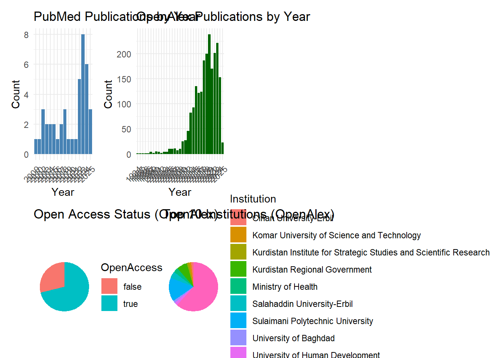
How innovations work
What separates scientists from a researcher ?
The notion of to do (re)-search is debatable.
Researchers gather information Vs Scientists build knowledge .
- Researchers follow established paths
- Scientists blaze new trails - Research produces data
- Science creates understanding - Innovation lies at the interface of two or more branches of science.
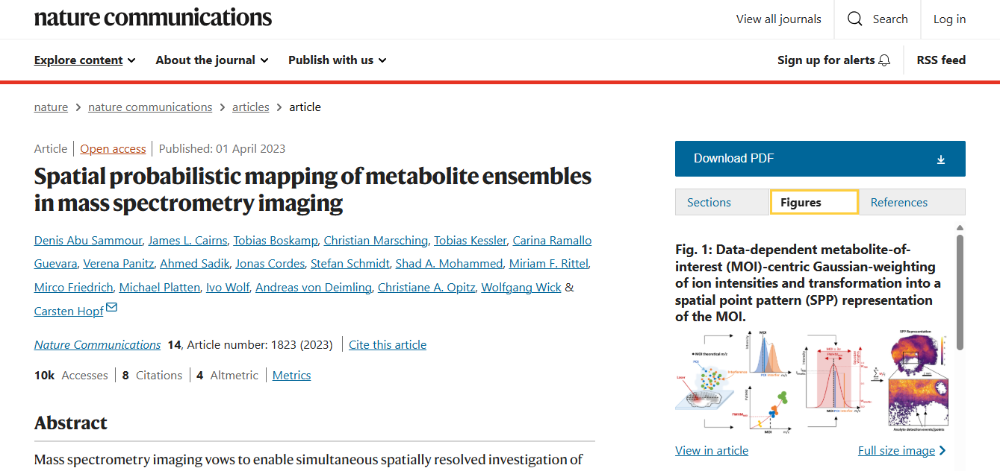-Is your work innovative enough ?
Final thoughts
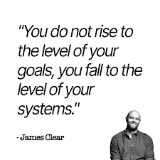
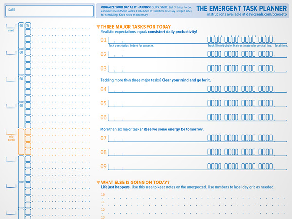
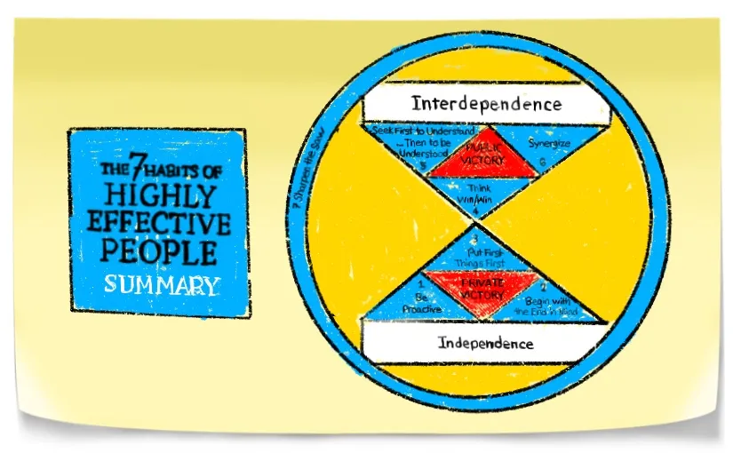
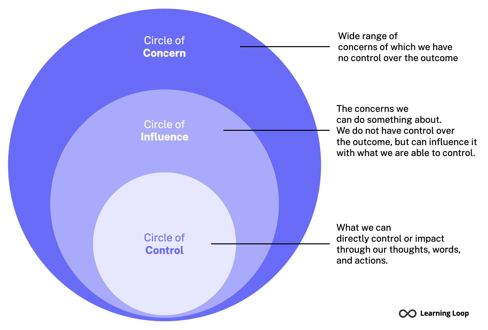